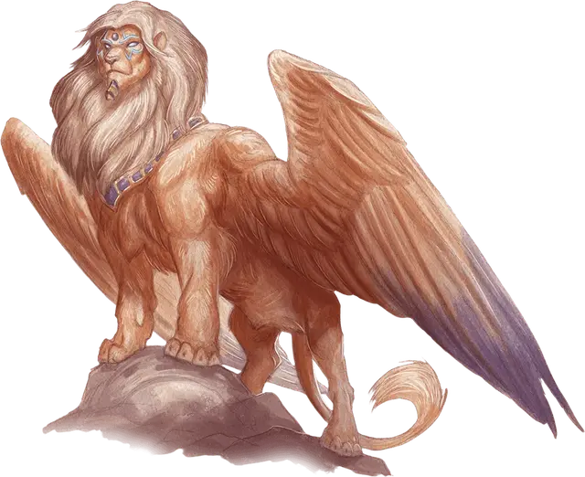

Андросфинкс
Androsphinx
Большой Монстр, законно-нейтральный

Класс Доспеха 17 (природный доспех)
Хиты 199 (19к10 + 95)
Скорость 40 футов, летая 60 футов
| мод | спас | ||
|---|---|---|---|
| СИЛ | 22 | +6 | +6 |
| ЛОВ | 10 | +0 | +6 |
| ТЕЛ | 20 | +5 | +11 |
| мод | спас | ||
|---|---|---|---|
| ИНТ | 16 | +3 | +9 |
| МДР | 18 | +4 | +10 |
| ХАР | 23 | +6 | +6 |
Навыки Восприятие +10, Магия +9, Религия +15
Иммунитет к урону психическая энергия; дробящий, колющий, рубящий от немагических атак
Иммунитет к состояниям очарование, испуг
Чувства истинное зрение 120 футов, пассивное Восприятие 20
Языки Общий, Язык Сфинксов
Опасность 17 (18000 опыта)
Бонус мастерства +6
Среда обитания Пустыня
Особенности
Непостижимый. Сфинкс обладает иммунитетом ко всем эффектам, которые чувствуют его эмоции или читают мысли, а также заклинаниям школы Прорицания, неугодным ему. Проверки Мудрости (Проницательность), совершенные для определения намерений и искренности сфинкса, совершаются с помехой.
Магическое оружие. Атаки оружием сфинкса являются магическими.
Использование заклинаний. Сфинкс является заклинателем 12-го уровня. Его базовой характеристикой является Мудрость (Сл спасброска от заклинания 18, +10 к попаданию атаками заклинаниями). Ему не требуются материальные компоненты для накладывания заклинаний. У сфинкса подготовлены следующие заклинания жреца:
• Заговоры (неограниченно): священное пламя [sacred flame], уход за умирающим [spare the dying], чудотворство [thaumaturgy]
• 1 уровень (4 ячейки): приказ [command], обнаружение зла и добра [detect evil and good], обнаружение магии [detect magic]
• 2 уровень (3 ячейки): малое восстановление [lesser restoration], область истины [zone of truth]
• 3 уровень (3 ячейки): рассеивание магии [dispel magic], языки [tongues]
• 4 уровень (3 ячейки): изгнание [banishment], свобода перемещения [freedom of movement]
• 5 уровень (2 ячейки): высшее восстановление [greater restoration], небесный огонь [flame strike]
• 6 уровень (1 ячейка): пир героев [heroes’ feast]
Действия
Мультиатака. Сфинкс совершает две атаки когтем.
Коготь. Рукопашная атака оружием: +12 к попаданию, досягаемость 5 футов, одна цель. Попадание: 17 (2к10 + 6) рубящего урона.
Рык (3/день). Сфинкс испускает магический рык. Каждый раз, когда он рычит до окончания продолжительного отдыха, рык звучит все громче, и эффекты у него разные. Все существа в пределах 500 футов от сфинкса, слышащие рык, должны совершить спасбросок.
Первый рык. Все существа, провалившие спасбросок Мудрости Сл 18, становятся испуганными на 1 минуту. Испуганное существо может повторять спасбросок в конце каждого своего хода, оканчивая эффект на себе при успехе.
Второй рык. Все существа, провалившие спасбросок Мудрости Сл 18, становятся оглохшими и испуганными на 1 минуту. Испуганное существо также парализовано и может повторять этот спасбросок в конце каждого своего хода, оканчивая эффект на себе при успехе.
Третий рык. Все существа совершают спасбросок Телосложения Сл 18. При провале существо получает урон звуком 44 (8к10) и сбивается с ног. При успешном спасброске существо получает половину этого урона и не сбивается с ног.
Легендарные действия
Сфинкс может совершить 3 легендарных действия, выбирая из представленных ниже вариантов. За один раз можно использовать только одно легендарное действие, и только в конце хода другого существа. Сфинкс восстанавливает использованные легендарные действия в начале своего хода.
Атака когтем. Сфинкс совершает одну атаку когтем.
Телепортация (стоит 2 действия). Сфинкс магическим образом телепортируется вместе со всем несомым и носимым снаряжением на расстояние до 120 футов в свободное пространство, которое он видит.
Накладывание заклинания (стоит 3 действия). Сфинкс накладывает заклинание из списка подготовленных заклинаний, используя ячейку заклинаний, как обычно.
Описание
Львиное тело андросфинкса венчает голова гуманоидного мужчины. Внешне угрюмый и расстроенный, он часто начинает разговор с оскорблений и язвительных замечаний. Но под грубой наружностью у андросфинкса скрывается благородное сердце. Он не склонен лгать или обманывать, но и информацией не делится так просто, он подбирает слова так же тщательно, как охраняет свои секреты.
Андросфинксы проверяют своих гостей на смелость и отвагу не только заставляя их выполнять задачи, но и своим ужасным рыком, который разносится эхом на мили окрест, вселяя страх и оглушая существ, которые находятся неподалеку. Те, кто справятся с проверками, могут быть вознаграждены пиром героев.
См. дополнительно статью: "Бестиарий: Сфинксы"